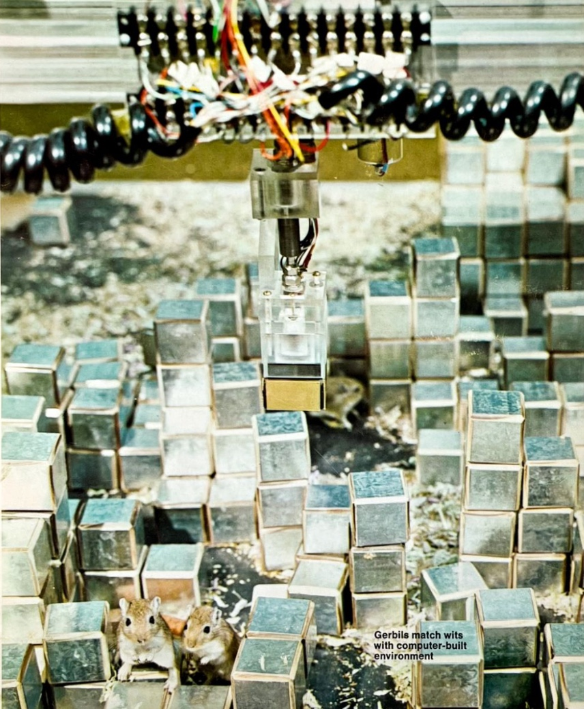

Created in 1969–70 by the Architecture Machine Group at MIT, SEEK was an experimental cybernetic installation
that placed gerbils and robotic intelligence in the same interactive environment. The system was designed to test
how a computer-controlled robotic arm would respond to unpredictable changes made by the gerbils within a 3D
block city. It revealed the limits of programmed logic when confronted with organic behavior and laid groundwork
for interactive, behavioral computation in design environments.

| Field | Description |
|---|
| Title | SEEK |
| Author | Nicholas Negroponte with the Architecture Machine Group |
| Year | 1969–1970 |
| Format | Interactive robotic installation / cybernetic sculpture |
| Audience | Public audience of the 1970 Software exhibition; researchers, designers, technologists |
| Institution | MIT – Architecture Machine Group |
| Exhibited | Software (1970), Jewish Museum, New York, curated by Jack Burnham |
| Medium | Plexiglass cage, metallic blocks, robotic gantry arm with electromagnet, live gerbils |
| Key Concepts | Cybernetics, interactivity, feedback systems, behavioral unpredictability, computational agency |
| Related Projects | URBAN (urban simulation system), PICTUREPHONE (early telecommunication interface) |
| Title & Author | Summary | Source Link |
|---|
| The Architecture Machine, Nicholas Negroponte (1970) |
Introduces SEEK as part of a vision for human-machine co-design environments. |
MIT Press |
| Soft Architecture Machines, Nicholas Negroponte (1975) |
Expands on SEEK’s behavioral logic and reflects on machine learning in design. |
MIT Press |
| Being Digital , Nicholas Negroponte (1995) |
Theoretical foundation of Architecture Machine ideas; pre-dates SEEK. |
JSTOR |
| Multimedia , J. E., Nicholas Negroponte, A. W. (1996) |
Theoretical foundation of Architecture Machine ideas; pre-dates SEEK. |
JSTOR |
| SEEK Internal Documentation, MIT Museum Archives |
Technical drawings, gantry robot specs, and experiment photos. |
MIT Museum Archives |
| Title & Author | Summary | Source Link |
|---|
| "Gerbils ex Machina," Thomas Hess, Art News (1970) |
Critique of SEEK’s failure; reflection on techno-art expectations. |
Art News Archive |
| Software Exhibition Catalog, Jack Burnham (1970) |
Curatorial framing of SEEK as software-based conceptual art. |
Primary Information |
| Digital Visions, Cynthia Goodman (1987) |
Contextualizes SEEK within digital art history. |
WorldCat |
| Art and the Future, Douglas Davis (1973) |
Documentation of SEEK’s MIT lab photos and its cybernetic ideals. |
Internet Archive |
| "From Cybernation to Interaction," Erkki Huhtamo, in The Digital Dialectic (1999) |
Analyzes SEEK as part of interactive media history. |
MIT Press |
| Architecture School, Joan Ockman (2012) |
Notes SEEK’s influence on design pedagogy and computation. |
MIT Press |
| Life After New Media, Kember & Zylinska (2012) |
Considers SEEK a precursor to media-as-process models. |
MIT Press |